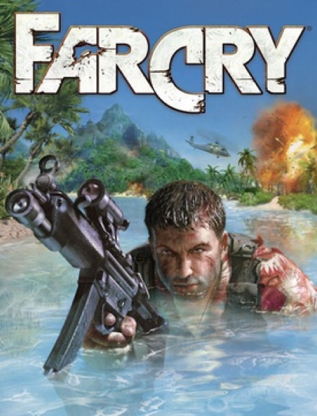

Shooter · 2004
Far Cry
Open islands, long sightlines, and enemies that flanked you for it.

Cover: Wikipedia: Far Cry (video game)
Facts
- Released
- 2004-03-23
- Genre
- FPS
- Category
- Shooter
- Platforms
- PC, PlayStation, Xbox
- Developers
- Crytek
- Publishers
- Buka Entertainment, Ubisoft